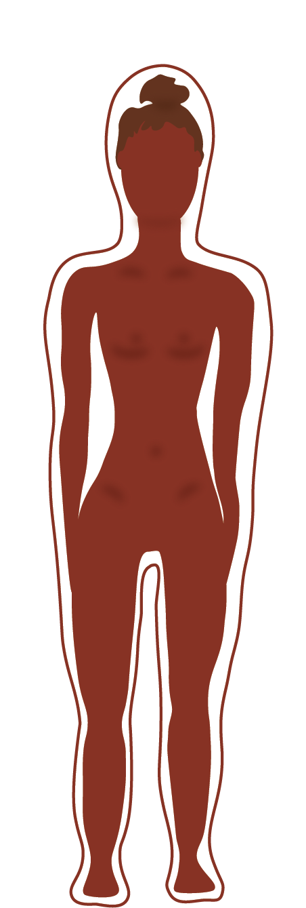

1990'ERNE
Ghettoblastere og chatrum
I 1990'erne er du en del af en generation på kanten af forandring. Ghettoblasteren spiller Britney Spears og Nirvana, og lavalampen gløder på natbordet. I biografen har “Pulp Fiction" premiere og derhjemme ringer du internettet op på telefonen for at få adgang til chatrum som Ofir.”
'Heroin-chic'
I modebladene og musikvideoer på MTV fremstod tidens idealer. Det tynde look uden former var in. 'Heroin-chic' begrebet opstår og betyder tynd krop, bleg hud og mørke rander under øjnene. Spice-Girls blev utroligt populære og folk klæder sig som dem.
